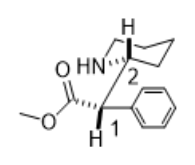
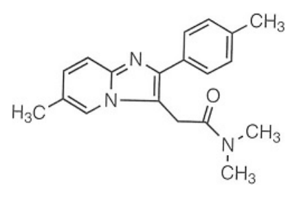
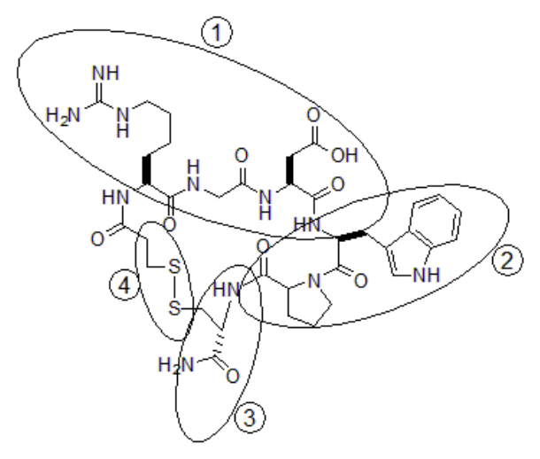
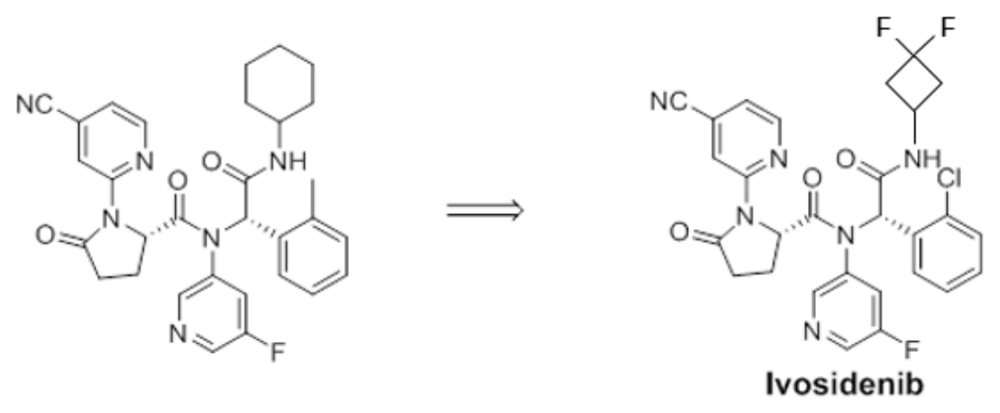
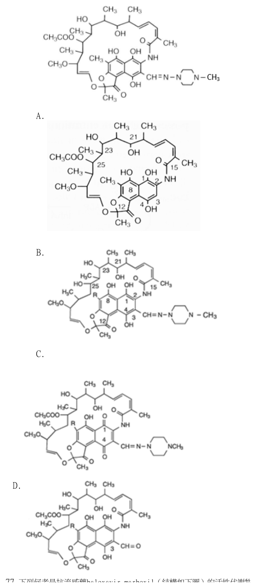
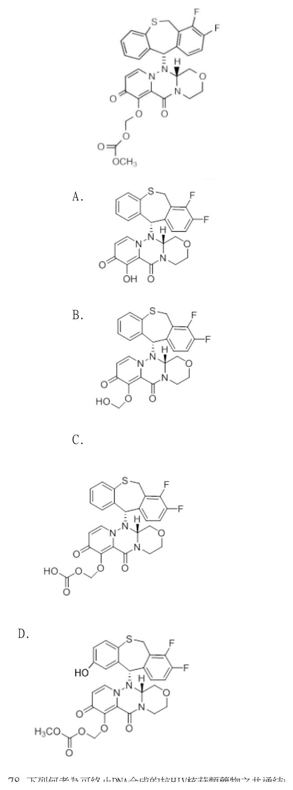

開卷有益 ／
藥師 ／ 藥理學與藥物化學 ／ 113 年第 2 次113 年第 2 次藥師藥理學與藥物化學試題與答案
這一頁是民國 113 年第 2 次藥師藥理學與藥物化學的整份歷屆試題，共 80 題，題目與標準答案出自考選部「國家考試試題及測驗式試題答案」開放資料，其中 70 題附有詳解。以下逐題列出題幹、選項與答案；要計時作答或記錄成績，請用線上練習。
考選部原始場次代碼：113090
線上作答這一科 →
全部 80 題
第 1 題
某藥廠在開發藥物A用於治療B疾病的過程中，合格的臨床試驗（clinical trial）是關鍵的階段，有關各期 臨床試驗的敘述，下列何者錯誤？
（A） 第一期主要測試藥物A的安全劑量範圍，只可徵集大約20～100名健康自願者受試，不可找B疾病患者受試（B） 第二期主要測試藥物A的療效，只需大約100～200名B疾病患者受試，不需要找健康自願者受試（C） 第三期是為了進一步確立藥物A的安全性和療效，通常以雙盲（double-blind）模式進行試驗，需要大數量 B疾病患者受試（D） 第四期是在藥物A獲准上市後開始進行，主要目的是監測藥物A的罕見副作用或者長期服用時才可能引起的 副作用答案：（A）
詳解與考點 正解：第一期試驗的核心為安全性、耐受性與劑量範圍，但受試者不絕對限於健康志願者。當藥物風險或疾病特性不適合健康者暴露時，可由患者受試；A以「不可」排除患者，故為錯誤敘述，故選 A。
B：第二期主要在目標疾病患者中初步評估療效與安全性，健康志願者不是此階段必需的受試族群。
C：第三期以較大數量的目標疾病患者進一步確立療效與安全性，常採雙盲設計以降低觀察與分派偏差。
D：第四期在上市後持續蒐集罕見或長期才出現的不良反應，屬上市後安全監視。
本題考點：臨床試驗分期（clinical trial phases）——第一期先看安全性與劑量，受試者選擇依藥物風險與倫理條件判斷；上市後安全監視（post-marketing surveillance）——罕見與長期不良反應通常要在第四期或真實世界使用後才較容易辨識。
第 2 題
嗜鉻細胞瘤（pheochromocytoma）病人在外科手術前1～3週， 常會使用phenoxybenzamine，是因為此藥物對 alpha-adrenoceptor的何種作用方式？
（A） inverse agonist（B） irreversible antagonist（C） competitive antagonist（D） spare receptor agonist答案：（B）
詳解與考點 正解：嗜鉻細胞瘤術前需持續降低兒茶酚胺造成的 alpha-adrenoceptor 血管收縮，phenoxybenzamine與 alpha-adrenoceptor 形成不可逆阻斷，使受體失活直到新受體生成。這符合 irreversible antagonist，故選 B。
A：inverse agonist 會降低具有基礎活性的受體訊號；phenoxybenzamine的關鍵不是反向致效，而是不可逆地阻斷受體。
C：competitive antagonist 與受體可逆競爭，增加致效劑濃度可克服部分阻斷；phenoxybenzamine的阻斷不具此可逆競爭特性。
D：spare receptor agonist 是致效劑相關概念，會造成受體活化，與術前需要的 alpha-adrenoceptor 阻斷方向相反。
本題考點：不可逆拮抗劑（irreversible antagonist）——看到持續性受體阻斷與新受體生成後才恢復時，判為不可逆拮抗；嗜鉻細胞瘤術前處置（pheochromocytoma preoperative management）——先控制 alpha-adrenoceptor 介導的血管收縮，再處理兒茶酚胺相關的血流動力風險。
第 3 題
病患有凝血功能異常且目前正服用warfarin，若因細菌感染而需服用cephalosporins抗生素治療時，為避免 嚴重出血，最不宜服用下列何者藥物？
（A） cefazolin（B） cefuroxime（C） cefixime（D） cefotetan答案：（D）
詳解與考點 正解：warfarin已降低維生素 K 依賴凝血因子的活性，而 cefotetan 具有易造成低凝血酶原血症的結構相關風險，會進一步提高出血機率。兩者的凝血影響疊加，故最不宜使用 cefotetan，故選 D。
A：cefazolin仍須依感染狀況與凝血風險審慎使用，但不具 cefotetan 在本題比較中的特徵性低凝血酶原風險。
B：cefuroxime不以 cefotetan 所代表的維生素 K 相關凝血風險為主要特徵，因此不是本題最不宜的選項。
C：cefixime同樣應留意個別病人的抗凝治療與出血狀態，但其比較重點不在 cefotetan 所具的特徵性風險。
本題考點：warfarin交互作用（warfarin drug interaction）——併用藥若再削弱維生素 K 依賴凝血，應優先評估出血風險；低凝血酶原血症（hypoprothrombinemia）——比較 cephalosporins 時，辨認會加重凝血異常的結構相關風險，而非只看同屬抗生素。
第 4 題
下列抗生素中，何者不會經由肝臟代謝？
（A） isoniazid（B） netilmicin（C） chloramphenicol（D） moxifloxacin答案：（B）
詳解與考點 正解：netilmicin屬 aminoglycoside，主要以原形經腎臟排泄，不經肝臟代謝，故選 B。
A：isoniazid會在肝臟進行代謝，肝功能與代謝型態會影響其暴露量。
C：chloramphenicol主要經肝臟代謝與結合後排除，不能歸為不經肝代謝的藥物。
D：moxifloxacin會經肝臟代謝途徑處理，與以腎臟原形排泄為主的 netilmicin 不同。
本題考點：aminoglycoside排除（aminoglycoside elimination）——看到 aminoglycoside 時，優先想到腎臟原形排泄並依腎功能評估；肝臟代謝（hepatic metabolism）——比較抗生素時，不能只用抗菌譜分類，須另看主要清除器官。
第 5 題
有關抗生素aminoglycosides藥物之敘述，下列何者錯誤？
（A） 對於格蘭氏陰性好氧菌（Gram-negative aerobes）抗菌效果好（B） 併用furosemide會加重此類藥物之腎臟毒性（C） 對於tobramycin產生抗藥性之格蘭氏陰性菌，可改用amikacin治療（D） 具時間依賴型之殺菌作用（time-dependent killing）答案：（D）
詳解與考點 正解：aminoglycosides的殺菌效應屬濃度依賴型，藥效與 Cmax/MIC 的關係特別重要，且具有 post-antibiotic effect。D把它寫成 time-dependent killing，故為錯誤敘述，故選 D。
A：aminoglycosides對 Gram-negative aerobes 的抗菌效果佳；其進入細菌細胞的運輸與有氧條件有關。
B：併用 furosemide 可增加 aminoglycosides 的腎毒性風險，並不改變此類藥物以濃度依賴殺菌為主的判準。
C：amikacin較不易受多種 aminoglycoside 修飾酶影響，因此對 tobramycin 產生抗藥性的部分格蘭氏陰性菌，仍可能保有治療價值。
本題考點：濃度依賴殺菌（concentration-dependent killing）——aminoglycosides以峰濃度相對 MIC 的暴露判斷藥效，不以超過 MIC 的時間為主；aminoglycoside抗藥性（aminoglycoside resistance）——同類藥物是否可替換，要看修飾酶與個別藥物的耐受性差異。
第 6 題
抑制細菌核糖體的抗生素與機轉配對，下列何者正確？
（A） tetracycline可造成misreading of mRNA，而使細菌加入錯誤胺基酸，生成無功能之蛋白質（B） lefamulin可抑制70S ribosome之initiation complex生成（C） erythromycin可抑制peptidyl transferase之活性（D） chloramphenicol可抑制aminoacyl-tRNA結合至mRNA ribosome complex答案：（C）
詳解與考點 正解：Erythromycin 為 macrolide 類抗生素，結合於 50S 次單元胜肽出口通道附近，主要阻斷新生胜肽鏈的移行（translocation）；chloramphenicol 才是直接抑制胜肽醯基轉移酶（peptidyl transferase）活性本身的藥物。選項 C 原文以「抑制 peptidyl transferase 之活性」描述 erythromycin，是教材常見的簡化說法，在本題四個選項中仍是唯一機轉配對正確的敘述，故選 C。
A：造成 mRNA 誤讀（misreading）而使細菌加入錯誤胺基酸的是 aminoglycoside 類藥物（如 streptomycin、gentamicin）的機轉，作用在 30S 次單元；tetracycline 的機轉是阻斷 aminoacyl-tRNA 結合到核醣體 A 位，兩者機轉不同，此處配對錯誤。
B：抑制 70S ribosome initiation complex 生成是 oxazolidinone 類（如 linezolid）的典型機轉；lefamulin 屬 pleuromutilin 類，作用在 50S 次單元的胜肽醯基轉移酶中心，干擾 tRNA 於 A、P 位的正確定位，並非以阻斷起始複合體形成為主要描述方式，此處配對錯誤。
D：阻斷 aminoacyl-tRNA 結合至核醣體－mRNA 複合體是 tetracycline 的機轉，非 chloramphenicol；chloramphenicol 的機轉是直接抑制胜肽醯基轉移酶活性——這與 erythromycin 阻斷移行是不同層次的作用，此處把 tetracycline 的機轉套到 chloramphenicol 頭上，配對錯置。
本題考點：核醣體標的抗生素的作用位置與步驟區分——aminoglycoside 誤讀 mRNA、tetracycline 阻斷 A 位 tRNA 結合、chloramphenicol 直接抑制胜肽醯基轉移酶活性、macrolide（erythromycin）結合 50S 出口通道附近以阻斷新生胜肽鏈移行（教材常簡稱為抑制胜肽醯基轉移酶）、oxazolidinone 阻斷起始複合體形成，五類機轉需逐一對應藥物類別，尤其 chloramphenicol 與 macrolide 在「抑制胜肽醯基轉移酶」的描述上容易混淆，不可混用。
第 7 題
下列何者屬於單株抗體類（monoclonal antibody）抗癌藥物？
（A） necitumumab（B） denosumab（C） abciximab（D） evolocumab答案：（A）
詳解與考點 正解：necitumumab是針對 EGFR 的單株抗體，可阻斷腫瘤細胞的受體訊號，因此屬本題所問的單株抗體類抗癌藥物，故選 A。
B：denosumab雖為單株抗體，但主要以抑制 RANKL 調節骨代謝；它的抗體身分容易造成混淆，卻不是本題所指的直接抗腫瘤單株抗體。
C：abciximab是作用於血小板 glycoprotein IIb/IIIa 的抗血小板藥物，不是抗癌藥物。
D：evolocumab為抑制 PCSK9 的單株抗體，用於降低 LDL cholesterol，治療目標不是腫瘤。
本題考點：抗癌單株抗體（anticancer monoclonal antibody）——先看抗體作用的標的是腫瘤訊號或腫瘤相關標靶，而非只看藥名字尾；單株抗體適應症區辨（monoclonal antibody indication differentiation）——同為單株抗體仍可分屬抗癌、骨代謝、抗血小板或降血脂治療，須以主要治療目標判斷。
第 8 題
下列藥物中，何者對治療鱗狀細胞非小細胞肺癌（squamous cell NSCLC）的療效最差？
（A） gemcitabine（B） nivolumab（C） carboplatin（D） pemetrexed答案：（D）
詳解與考點 正解：關鍵在「鱗狀細胞」這個組織學分類。pemetrexed 為抑制多個葉酸依賴酵素的 antifolate，對非鱗狀 NSCLC 的應用較佳；相較之下，鱗狀細胞 NSCLC 的反應較差，因此（D）在所列藥物中療效最差，故選 D。
A：gemcitabine 為核苷類抗代謝物，常可與 platinum 類藥物併用於鱗狀細胞 NSCLC；它不是因組織型而特別應排除的藥物。
B：nivolumab 為 anti-PD-1 monoclonal antibody，可解除 T 細胞的免疫檢查點抑制，在適合免疫治療的鱗狀細胞 NSCLC 病人仍有治療角色。
C：carboplatin 藉 DNA cross-linking 造成細胞毒性，是肺癌化學治療常見的 platinum 類骨幹藥物；其使用不受 pemetrexed 那種鱗狀組織型限制。
本題考點：非小細胞肺癌組織型選藥（NSCLC histology-based therapy）——比較肺癌藥物時，先辨認 squamous 或 nonsquamous，pemetrexed 的組織型限制是重要分界；pemetrexed（antifolate）——遇到鱗狀細胞 NSCLC 時，應聯想到其相對療效較差，而非把所有 NSCLC 視為同一反應族群。
第 9 題
下列藥物中，何者能直接促進plasminogen活化而導致血栓溶解？
（A） tranexamic acid（B） dabigatran（C） tenecteplase（D） desmopressin答案：（C）
詳解與考點 正解：血栓溶解的直接關鍵是把 plasminogen 轉成 plasmin。（C）tenecteplase 是經修飾的 tissue plasminogen activator，可促進 plasminogen 活化；形成的 plasmin 分解 fibrin，因而使血栓溶解，故選 C。
A：tranexamic acid 阻止 plasminogen 與 fibrin 的結合，作用方向是抑制纖維蛋白溶解，用於減少出血而不是溶栓。
B：dabigatran 直接抑制 thrombin，抑制 fibrin 形成以預防或治療血栓；它不會活化 plasminogen。
D：desmopressin 主要促進 von Willebrand factor 與 factor VIII 釋放以改善止血，並非纖維蛋白溶解藥。
本題考點：血栓溶解（thrombolysis）——題幹出現 plasminogen 活化時，鎖定能生成 plasmin 的 tPA 類藥物；抗纖維蛋白溶解（antifibrinolysis）——tranexamic acid 阻斷 plasminogen 的作用位置，方向與 tenecteplase 相反；直接 thrombin 抑制（direct thrombin inhibition）——抑制凝血酶是抗凝血，不等於分解既有 fibrin 血栓。
第 10 題
關於貧血治療藥物之敘述，下列何者正確？
（A） hydroxyurea可以抑制hemoglobin S（HbS）的聚合（B） 口服folic acid能有效治療惡性貧血（pernicious anemia）（C） darbepoetin alfa可以抑制JAK/STAT訊息（D） oprelvekin可抑制interleukin 11 receptor答案：（A）
詳解與考點 正解：鐮刀型貧血的關鍵是去氧 HbS 聚合。（A）hydroxyurea 增加 fetal hemoglobin（HbF），藉 HbF 抑制 HbS 聚合，故選 A。
B：pernicious anemia 是 intrinsic factor 缺乏導致 vitamin B12 吸收障礙。folic acid 可改善部分血液變化，卻不能取代 cobalamin，且可能掩蓋神經損害。
C：darbepoetin alfa 與 erythropoietin receptor 結合後活化 JAK/STAT 促紅血球生成，不是抑制此路徑。
D：oprelvekin 為 recombinant interleukin-11，活化其 receptor 促進血小板生成，並非抑制受體。
本題考點：鐮刀型血色素聚合（HbS polymerization）——看到 hydroxyurea 時，連結提高 HbF、降低 HbS 聚合；惡性貧血（pernicious anemia）——因 intrinsic factor 缺乏時，治療判準是補充 vitamin B12，不可用 folic acid 取代；紅血球生成素訊息（erythropoietin JAK/STAT signaling）——darbepoetin alfa 為受體致效劑，訊息方向是活化而非抑制。
第 11 題
下列降血脂藥中，何者可造成vitamin K吸收異常及膽結石形成之副作用？
（A） niacin（B） fenofibrate（C） cholestyramine（D） ezetimibe答案：（C）
詳解與考點 正解：能同時連結脂溶性 vitamin K 吸收受損與膽結石風險的，是膽酸結合樹脂。（C）cholestyramine 在腸道結合膽酸，干擾形成微膠粒所需的膽酸循環，因而降低 vitamin K 吸收；膽酸組成改變也與膽結石形成相連，故選 C。
A：niacin 的重要不良反應包括潮紅、肝毒性、高血糖與高尿酸血症，並非以 vitamin K 吸收異常和膽結石的組合為特徵。
B：fenofibrate 可增加膽結石風險，這一點看似接近題意；但它是 PPAR-α agonist，並不會像 cholestyramine 一樣在腸道結合膽酸而造成脂溶性 vitamin K 吸收不良。
D：ezetimibe 抑制腸上皮 NPC1L1 以減少膽固醇吸收，沒有膽酸結合樹脂造成的脂溶性維生素吸收問題。
本題考點：膽酸結合樹脂（bile acid sequestrants）——題幹同時出現脂溶性維生素吸收障礙時，判斷是否有腸道膽酸結合機轉；fibrate（PPAR-α agonist）——看到膽結石可聯想到此類藥，但須再用 vitamin K 吸收異常排除，不能只憑單一副作用選答。
第 12 題
下列藥物中，何者為RANKL monoclonal antibody，可用於治療骨質疏鬆症？
（A） bevacizumab（B） canakinumab（C） golimumab（D） denosumab答案：（D）
詳解與考點 正解：骨質疏鬆症中若直接中和 RANKL，便能阻斷 osteoclast 的形成與活化。（D）denosumab 是 anti-RANKL monoclonal antibody，可降低骨吸收，故選 D。
A：bevacizumab 是 anti-VEGF-A monoclonal antibody，主要藉抑制血管新生用於腫瘤治療，不作用於 RANKL。
B：canakinumab 中和 interleukin-1β，靶點是發炎性 cytokine 而非骨代謝的 RANKL。
C：golimumab 是 anti-TNF-α monoclonal antibody，用於 TNF-α 驅動的發炎疾病，並非直接抑制 osteoclast 的 RANKL 訊號。
本題考點：RANKL-RANK 軸（RANKL-RANK pathway）——題幹問抑制 osteoclast 分化時，辨認能中和 RANKL 的 denosumab；單株抗體靶點辨識（monoclonal antibody target identification）——先把抗體名稱對回 cytokine 或 ligand，不能因皆為抗體而視為同一類骨質疏鬆治療。
第 13 題
下列何者為雌激素受體部分致效劑（estrogen receptor partial agonist），但可以拮抗雌激素於下視丘 之負回饋作用，而促進腦下垂體大量釋放性促素（gonadotropins）？
（A） anastrozole（B） clomiphene（C） danazol（D） flutamide答案：（B）
詳解與考點 正解：關鍵在阻斷下視丘的 estrogen 負回饋後促進 gonadotropins 分泌。（B）clomiphene 是 selective estrogen receptor modulator，在下視丘表現為拮抗 estrogen 負回饋的作用，增加 GnRH 釋放，進而提高腦下垂體的 FSH 與 LH，故選 B。
A：anastrozole 抑制 aromatase 以降低 estrogen 合成；它不直接作為 estrogen receptor partial agonist。
C：danazol 為具 androgenic 性質的合成類固醇，對 gonadotropins 有抑制效果，方向與題述的大量釋放相反。
D：flutamide 為 androgen receptor antagonist，用於阻斷 androgen 作用，不干擾 estrogen 在下視丘的負回饋。
本題考點：clomiphene（selective estrogen receptor modulator）——不孕症題看到解除 estrogen 負回饋與 FSH、LH 上升時，選擇 clomiphene；aromatase inhibition——降低 estrogen 合成與直接拮抗 estrogen receptor 是不同層級的機轉，須依題幹問的是合成或受體來區分。
第 14 題
關於降血糖藥sulfonylureas之敘述，下列何者正確？
（A） 主要機轉為抑制胰臟β細胞之ATP依賴型鉀離子通道（B） tolbutamide之作用強度（potency）明顯高於glyburide（C） 主要用於治療第一型糖尿病（D） 只能以注射方式給藥才有療效答案：（A）
詳解與考點 正解：sulfonylureas 的分辨點是作用於胰臟 β 細胞的 KATP channel。（A）此類藥與 SUR1 結合並關閉 ATP-sensitive potassium channel，使細胞去極化、鈣離子內流及 insulin 分泌增加，故選 A。
B：tolbutamide 是第一代 sulfonylurea，potency 低於第二代的 glyburide；兩者的差異在所需劑量，不是 tolbutamide 較強。
C：sulfonylureas 需保有可分泌 insulin 的 β 細胞才有效，主要用於第二型糖尿病，不能取代第一型糖尿病的 insulin 治療。
D：sulfonylureas 具口服療效，正是常見的口服降血糖藥；並非只能注射給藥。
本題考點：sulfonylureas（KATP channel blockers）——看到 SUR1 或 β 細胞去極化時，判斷為關閉 KATP channel 以促 insulin 分泌；第一代與第二代 sulfonylurea——比較 potency 時，glyburide 屬較高 potency 的第二代藥物；第一型糖尿病（type 1 diabetes mellitus）——缺乏 endogenous insulin 時，促分泌藥不能取代 insulin。
第 15 題
下列糖尿病治療藥物中，何者僅以皮下注射方式給藥，不屬於口服降血糖藥？
（A） dulaglutide（B） saxagliptin（C） metformin（D） glyburide答案：（A）
詳解與考點 正解：題幹要區分注射型 incretin 藥與口服降血糖藥。（A）dulaglutide 是 long-acting GLP-1 receptor agonist，臨床以皮下注射投與，不屬於口服降血糖藥，故選 A。
B：saxagliptin 是 DPP-4 inhibitor，可口服給藥以延長 endogenous incretin 的作用。
C：metformin 是口服 biguanide，主要降低肝臟 glucose production，並非注射型藥物。
D：glyburide 是口服 sulfonylurea，藉刺激胰臟 β 細胞分泌 insulin 發揮作用。
本題考點：GLP-1 receptor agonists——題目問僅能皮下注射的糖尿病藥時，辨認 dulaglutide 這類 incretin mimetic；DPP-4 inhibitors——saxagliptin 是口服、間接延長 endogenous incretin 的藥，與直接 GLP-1 receptor agonist 的給藥途徑不同。
第 16 題
Sacubitril併用valsartan用於治療心衰竭，可降低死亡率及再住院率，關於其藥理作用機制之敘述，下列 何者正確？
（A） 產生血管放鬆作用及減少體液滯留，減少心臟前負荷（preload）與後負荷（afterload）（B） sacubitril能直接產生血管放鬆作用，且能促進brain natriuretic peptide及atrial natriuretic peptide之生合成，增強血管放鬆作用（C） valsartan能抑制angiotensin II converting enzyme，產生血管放鬆作用（D） valsartan能抑制angiotensin II活化aldosterone receptor，產生血管放鬆作用答案：（A）
詳解與考點 正解：sacubitril/valsartan 以增強利鈉胜肽並阻斷 angiotensin II 訊號發揮效果。（A）可造成血管舒張、利鈉與減少體液滯留，降低 preload 與 afterload，故選 A。
B：sacubitril 抑制 neprilysin，減少 brain natriuretic peptide 與 atrial natriuretic peptide 分解；它看似提高利鈉胜肽效果，但不是直接血管舒張或促進生合成。
C：valsartan 是 angiotensin II type 1 receptor blocker，不抑制 angiotensin converting enzyme；後者是 ACE inhibitors 的機轉。
D：valsartan 阻斷 angiotensin II type 1 receptor，不是 aldosterone receptor；aldosterone 下降是阻斷上游訊號的結果。
本題考點：angiotensin receptor-neprilysin inhibitor（ARNI）——看到兩藥時，拆成減少 natriuretic peptides 分解加上阻斷 AT1 receptor；preload 與 afterload——利鈉、利尿及血管舒張分別連結體液量與血管阻力下降。
第 17 題
降血壓藥物captopril會引發乾咳副作用的機制為何？
（A） 抑制angiotensin converting enzyme同時抑制bradykinin代謝，造成bradykinin, substance P累積所致（B） 抑制angiotensin converting enzyme同時抑制bradykinin活性，造成prostaglandin, substance P累積所 致（C） 抑制angiotensin converting enzyme同時抑制kallikrein活性，造成bradykinin, substance P累積所致（D） 抑制angiotensin converting enzyme同時抑制kininogen代謝，造成bradykinin, prostaglandin累積所致答案：（A）
詳解與考點 正解：captopril 所致乾咳要從 ACE 同時是 kininase II 來判斷。（A）抑制 angiotensin converting enzyme 會減少 bradykinin 的代謝，使 bradykinin 與 substance P 累積並刺激呼吸道，故選 A。
B：bradykinin 在 ACE inhibition 下是代謝受阻而累積，不是活性被抑制；把方向寫反後，後續以 prostaglandin 解釋也無法構成題述的主要機轉。
C：kallikrein 是由 kininogen 產生 bradykinin 的相關酵素，ACE inhibitors 並非藉抑制 kallikrein 導致乾咳。
D：kininogen 是 bradykinin 的前驅物，ACE inhibition 的關鍵是抑制 bradykinin 分解，而非抑制 kininogen 代謝。
本題考點：ACE inhibitor cough——乾咳與 bradykinin、substance P 分解減少有關，看到 captopril 時先辨認 kininase II 角色；kallikrein-kinin system——區分前驅物 kininogen、生成相關的 kallikrein 與分解 bradykinin 的 ACE，才能判定作用位置。
第 18 題
下列何種降血壓藥最不易引發高尿酸血症或痛風？
（A） bumetanide（B） furosemide（C） chlorothiazide（D） captopril答案：（D）
詳解與考點 正解：判準是該降壓藥是否會使尿酸腎排泄下降。（D）captopril 為 ACE inhibitor，不具有 loop 或 thiazide 利尿劑造成體液收縮與尿酸滯留的典型作用，因此四者中最不易引發高尿酸血症或痛風，故選 D。
A：bumetanide 是 loop diuretic，可降低尿酸排泄並造成高尿酸血症，痛風病人須留意。
B：furosemide 同為 loop diuretic，其利尿造成的體液收縮會增加近端腎小管尿酸再吸收，因此是高尿酸血症的常見誘因。
C：chlorothiazide 為 thiazide diuretic，也會降低尿酸排泄；雖與 loop diuretic 作用部位不同，尿酸方向相同。
本題考點：利尿劑相關高尿酸血症（diuretic-induced hyperuricemia）——遇到 loop 或 thiazide diuretic 時，預期尿酸排泄下降而非上升；ACE inhibitors——在比較痛風風險時，需先區分其不具典型利尿劑的尿酸滯留機轉。
第 19 題
下列何種利尿劑會增加腎臟鈣離子的再吸收作用，可用來治療特異性高尿鈣症所引起之腎結石 （nephrolithiasis due to idiopathic hypercalciuria）？
（A） mannitol（B） torsemide（C） chlorthalidone（D） spironolactone答案：（C）
詳解與考點 正解：治療 idiopathic hypercalciuria 時要選能降低尿中鈣的利尿劑。（C）chlorthalidone 為 thiazide-like diuretic，抑制遠曲小管 Na+/Cl- cotransporter 後會增加鈣離子再吸收，降低尿鈣，故可用於預防相關腎結石，故選 C。
A：mannitol 是 osmotic diuretic，增加管腔滲透壓以帶出水分，並不增加腎臟鈣離子再吸收。
B：torsemide 是 loop diuretic，抑制 Na+/K+/2Cl- cotransporter 後消除管腔正電位，反而降低鈣離子旁細胞再吸收並增加尿鈣。
D：spironolactone 阻斷 collecting duct 的 mineralocorticoid receptor，主要影響鈉與鉀的交換，沒有 thiazide 類降低尿鈣的用途。
本題考點：thiazide 類利尿劑與鈣（thiazide-induced calcium reabsorption）——遇到高尿鈣性腎結石時，選擇增加鈣再吸收、降低尿鈣的 thiazide 或 thiazide-like 藥；loop diuretics——抑制 Na+/K+/2Cl- cotransporter 時會增加尿鈣，與 thiazide 類的鈣效應相反。
第 20 題
下列何者不是利尿劑干擾腎小管回收鈉離子之作用標的？
（A） carbonic anhydrase（B） Na+/K+/2Cl- cotransporter（C） Na+/Cl- cotransporter（D） Na+/K+-ATPase答案：（D）
詳解與考點 正解：利尿劑直接干擾鈉再吸收的標的是腎小管酵素或頂端膜 transporters。（D）Na+/K+-ATPase 位於基底外側膜、維持鈉梯度，卻非常用利尿劑的直接標的，故選 D。
A：carbonic anhydrase 是 acetazolamide 的直接標的；抑制後近端腎小管 bicarbonate 與 sodium reabsorption 都會下降。
B：Na+/K+/2Cl- cotransporter 是 loop diuretics 的直接標的，位於 thick ascending limb。
C：Na+/Cl- cotransporter 是 thiazide 類利尿劑的直接標的，位於 distal convoluted tubule。
本題考點：利尿劑作用位置（diuretic sites of action）——carbonic anhydrase 對 acetazolamide、Na+/K+/2Cl- cotransporter 對 loop diuretics、Na+/Cl- cotransporter 對 thiazides；腎小管膜定位（tubular membrane localization）——頂端膜 transporters 是多數利尿劑直接靶點，基底外側 Na+/K+-ATPase 是維持梯度的背景幫浦。
第 21 題
關於抗心律不整藥物dronedarone和amiodarone藥理作用之比較，下列敘述何者正確？
（A） amiodarone抗上心室心律不整（supraventricular arrhythmias）之效價較強（B） 僅有amiodarone可治療甲狀腺功能異常病症（C） dronedarone可減少decompensated heart failure病人死亡率（D） dronedarone缺少iodine atoms，且半衰期較短答案：（D）
詳解與考點 正解：官方答案為 D；惟（A）若將「效價較強」理解為上心室心律不整的臨床效果，amiodarone 通常較有效，未限定適應症與終點會造成可能同時成立的爭點。（D）dronedarone 是 amiodarone 的非碘化衍生物，缺少 iodine atoms、脂溶性較低且半衰期較短，故選 D。
A：效價比較須限定心律不整種類與終點，不能把不同臨床情境濃縮成無條件的單一比較；此處是題目與官方答案間的歧義。
B：amiodarone 不是治療甲狀腺功能異常的藥物，反而因含 iodine 而可能引起甲狀腺功能低下或亢進，因此「僅有」不成立。
C：dronedarone 不用於 decompensated heart failure，這類病人使用時死亡風險反而上升，故不能說可降低死亡率。
本題考點：dronedarone（noniodinated amiodarone derivative）——比較兩藥時，先用 iodine atoms 與半衰期辨認無爭議的結構差異；心衰竭風險（heart failure risk）——decompensated heart failure 時，不可把 dronedarone 當成改善預後的藥物；選項可判定性（option specificity）——臨床效價未交代適應症與終點時，應辨認可能產生多重正解的爭點。
第 22 題
Fenoldopam治療高血壓危症（hypertensive emergencies）的藥理作用機轉為何？
（A） 活化adenosine A1 receptor，舒張周邊動脈（B） 活化muscarinic M2 receptor，舒張周邊靜脈（C） 活化dopamine D1 receptor，舒張周邊動脈（D） 活化prostaglandin I2 receptor，舒張周邊靜脈答案：（C）
詳解與考點 正解：Fenoldopam 用於高血壓危症時，關鍵是選擇性活化血管 dopamine D1 receptor。（C）D1 receptor 活化造成周邊小動脈舒張，並可增加腎血流與排鈉，故選 C。
A：adenosine A1 receptor 活化與 fenoldopam 無關，且 A1 receptor 在腎臟的效應並非題述的周邊動脈舒張。
B：muscarinic M2 receptor 主要位於心臟，活化時降低心率與傳導，不是 fenoldopam 的血管舒張機轉。
D：prostaglandin I2 receptor 活化可造成血管舒張，但 fenoldopam 不是 prostacyclin 類藥物，且題述的周邊靜脈定位不符其典型作用。
本題考點：fenoldopam（selective dopamine D1 receptor agonist）——高血壓危症題看到 fenoldopam 時，配對 D1 receptor 與 arteriolar vasodilation；受體與器官效應——M2 對心臟、D1 對血管與腎臟的配對，是用受體名稱排除誘答的操作方式。
第 23 題
下列何者不是擬副交感神經興奮藥物（cholinomimetic drug）的治療用途？
（A） 青光眼（glaucoma）（B） 重症肌無力（myasthenia gravis）（C） 阿茲海默症（Alzheimer disease）（D） 帕金森氏症（Parkinson disease）答案：（D）
詳解與考點 正解：本題問 cholinomimetic drug 不適用的疾病。Parkinson disease 是 dopamine 不足、cholinergic activity 過強，治療補 dopamine 或減少 acetylcholine 作用；（D）不是其用途，故選 D。
A：青光眼可用 muscarinic agonist 或 acetylcholinesterase inhibitor 增加房水流出，屬 cholinomimetic drug 用途，故非答案。
B：重症肌無力以 acetylcholinesterase inhibitor 增加接合處 acetylcholine，改善肌力，故非答案。
C：阿茲海默症可用中樞 acetylcholinesterase inhibitor 提高 cholinergic transmission，屬 cholinomimetic drug 用途，故非答案。
本題考點：擬膽鹼藥物用途（cholinomimetic uses）——青光眼、重症肌無力與阿茲海默症分別從房水流出、神經肌肉傳遞與中樞 cholinergic transmission 判斷；帕金森氏症神經傳遞平衡（Parkinson disease neurotransmitter balance）——dopamine 不足時，避免增加過強的 acetylcholine 作用。
第 24 題
下列副交感神經藥物中，何者具有支氣管擴張作用，可用於治療慢性阻塞性肺病（COPD）？
（A） tiotropium（B） bethanechol（C） neostigmine（D） solifenacin答案：（A）
詳解與考點 正解：COPD 的支氣管擴張可藉阻斷 muscarinic receptor 達成。（A）tiotropium 為 muscarinic antagonist，可減少乙醯膽鹼引起的支氣管收縮，故選 A。
B：bethanechol 是直接 muscarinic agonist，會促進平滑肌收縮，可能造成支氣管收縮而非擴張。
C：neostigmine 抑制 acetylcholinesterase，使 acetylcholine 作用增加；它用於重症肌無力，沒有 COPD 支氣管擴張用途。
D：solifenacin 同為 muscarinic antagonist，容易與 tiotropium 混淆；但它主要作用於膀胱 M3 receptor，用於 overactive bladder，並非 COPD 支氣管擴張藥。
本題考點：long-acting muscarinic antagonist（LAMA）——COPD 題看到 tiotropium 時，連結阻斷 M3 receptor 與支氣管擴張；muscarinic agonist 與 antagonist——氣道平滑肌的 muscarinic activity 增加會收縮，阻斷才會擴張；藥物器官選擇性——同為 antimuscarinic drug 時，以主要作用器官區分 tiotropium 與 solifenacin。
第 25 題
下列直接作用型擬膽鹼藥物（cholinomimetics）中，何者最易被cholinesterase水解而失去活性？
（A） methacholine（B） carbachol（C） bethanechol（D） acetylcholine答案：（D）
詳解與考點 正解：直接作用型 cholinomimetics 對 cholinesterase 的穩定性取決於結構修飾。（D）acetylcholine 沒有 carbamoyl 或 β-methyl 保護，最容易被 cholinesterase 快速水解而失去活性，故選 D。
A：methacholine 具有 β-methyl 取代基，對 cholinesterase 的水解較 acetylcholine 慢，且 muscarinic selectivity 較高。
B：carbachol 具有 carbamoyl 結構，可抗 cholinesterase 水解，不是最易失活的選項。
C：bethanechol 同時具有 carbamoyl 與 β-methyl 修飾，對 cholinesterase 的抗性最明顯，與題述方向相反。
本題考點：膽鹼酯水解抗性（cholinesterase resistance）——無修飾的 acetylcholine 最易被水解，題目出現 carbamoyl 時應判斷水解抗性增加；β-methyl substitution——比較直接 cholinomimetics 時，β-methyl 可增加 muscarinic selectivity 並降低 cholinesterase 水解速率。
第 26 題
下列那一種藥物為前列腺素類製劑，適用於預防nonsteroidal anti-inflammatory drugs（NSAIDs）引起之 胃潰瘍？
（A） omeprazole（B） sucralfate（C） ranitidine（D） misoprostol答案：（D）
詳解與考點 正解：預防 NSAIDs 引起胃潰瘍若指定為前列腺素類製劑，便要找 PGE1 analog。（D）misoprostol 補回 NSAIDs 抑制 prostaglandin 後減少的胃黏膜保護作用，可增加黏液與 bicarbonate 分泌並降低胃酸分泌，故選 D。
A：omeprazole 是 proton pump inhibitor，可降低胃酸而有預防潰瘍作用，但它不是 prostaglandin 類製劑。
B：sucralfate 在潰瘍表面形成保護層，屬局部黏膜保護劑，沒有 PGE1 analog 的身分與機轉。
C：ranitidine 是 histamine H2 receptor antagonist，以抑制胃酸分泌為主，不屬於前列腺素類藥物。
本題考點：misoprostol（PGE1 analog）——題幹同時出現 NSAIDs 潰瘍預防與前列腺素類時，直接選擇 misoprostol；NSAID gastropathy——NSAIDs 降低 prostaglandin 後會削弱黏液、bicarbonate 與黏膜血流保護，補回此方向的藥物才是機轉對應答案。
第 27 題
下列何種藥物常使用於旅行途中的腹瀉（traveler's diarrhea）？
（A） misoprostol（B） bismuth subsalicylate（C） octreotide（D） sucralfate答案：（B）
詳解與考點 正解：旅行者腹瀉的常用藥需兼具減少腸道分泌與局部抗發炎、抗微生物效果。（B）bismuth subsalicylate 可用於旅行者腹瀉的預防或症狀處理，是所列選項中最符合的藥物，故選 B。
A：misoprostol 是 PGE1 analog，用於預防 NSAIDs 相關胃潰瘍；腹瀉反而是其不良反應之一，不是旅行者腹瀉的常用治療。
C：octreotide 抑制多種腸胃道激素與分泌，適用於特定嚴重 secretory diarrhea 或內分泌相關症候群，並非旅行者腹瀉的常規選擇。
D：sucralfate 形成胃十二指腸潰瘍的局部保護層，不具有旅行者腹瀉所需的止瀉或抗微生物作用。
本題考點：bismuth subsalicylate——旅行者腹瀉題出現預防或輕症處理時，辨認其局部抗分泌與抗發炎作用；藥物不良反應與適應症——misoprostol 可造成腹瀉不代表可治療腹瀉，須以作用方向判斷；secretory diarrhea——octreotide 適用於特定分泌性病因，不能泛用到一般旅行者腹瀉。
第 28 題
關於H1抗組織胺藥物的敘述，下列何者錯誤？
（A） 第一代H1抗組織胺藥物具有局部麻醉作用（B） 第二代H1抗組織胺藥物具有較少的鎮靜作用（C） 第二代H1抗組織胺藥物具有抗帕金森氏症作用（D） 第一代H1抗組織胺藥物具有止吐作用答案：（C）
詳解與考點 正解：第一代與第二代 H1 抗組織胺的分水嶺在中樞穿透與抗 muscarinic 作用。第二代藥物多限制在周邊組織，鎮靜與抗 muscarinic 效應均較弱，不能作為抗帕金森氏症用途；因此（C）將此作用歸給第二代 H1 抗組織胺是錯誤敘述，故選 C。
A：第一代 H1 抗組織胺可兼具鈉離子通道阻斷作用，因而有局部麻醉樣效果。這是第一代較不專一所帶來的附帶藥理作用，敘述正確。
B：第二代 H1 抗組織胺較不易進入中樞神經系統，對中樞 H1 受體的占據較少，因此鎮靜作用較少，敘述正確。
D：第一代 H1 抗組織胺能抑制前庭系統相關的 H1 與 muscarinic 訊號，可用於動暈相關噁心嘔吐，故具有止吐作用。
本題考點：第一代 H1 抗組織胺（first-generation H1 antihistamines）——看到鎮靜、止吐、抗 muscarinic 或局部麻醉樣作用時，優先歸到較能進入中樞的第一代；第二代 H1 抗組織胺（second-generation H1 antihistamines）——判斷鎮靜差異時看血腦障壁穿透性，不把第一代的中樞附帶作用搬到第二代。
第 29 題
下列止吐藥物，何者最適合用於預防癌症化療藥物引起的急性及延遲性嘔吐？
（A） ondansetron（B） granisetron（C） dolasetron（D） palonosetron答案：（D）
詳解與考點 正解：預防化療引起的急性與延遲性嘔吐，要選能持續抑制 5-HT3 受體的藥物。palonosetron 對 5-HT3 受體的結合持久，止吐效果可涵蓋兩個時相；因此（D）最符合題幹的雙重預防需求，故選 D。
A、B、C：ondansetron、granisetron 與 dolasetron 都是 5-HT3 受體拮抗劑，對急性化療誘發嘔吐有效；但相較於 palonosetron，作用維持時間較短，單靠其中任一者較不符合「同時預防急性及延遲性」的判準。
本題考點：5-HT3 受體拮抗劑（5-HT3 receptor antagonists）——化療後急性嘔吐以阻斷腸道與中樞的 serotonin 訊號為主，先辨認同類藥物；化療誘發噁心嘔吐（chemotherapy-induced nausea and vomiting，CINV）——題幹同時出現急性與延遲性時，優先選作用持久、可涵蓋兩時相的藥物。
第 30 題
下列局部麻醉劑中，何者具有最高的水溶性，但作用強度（potency）最低且作用時間（duration of action）最短？
（A） procaine（B） tetracaine（C） bupivacaine（D） ropivacaine答案：（A）
詳解與考點 正解：局部麻醉劑的效價與時效通常隨脂溶性及蛋白質結合能力增加而提高。procaine 在所列藥物中水溶性最高、脂溶性較低，因此穿入神經膜的能力較弱，呈現最低效價與最短作用時間；三項特徵都吻合（A），故選 A。
B、C、D：tetracaine 的脂溶性與效價較高；bupivacaine 與 ropivacaine 都較易與組織及蛋白質結合，作用時間較長。三者均不符合「水溶性最高、效價最低且時效最短」的整組條件。
本題考點：局部麻醉劑脂溶性（local anesthetic lipid solubility）——比較效價時先看藥物穿過脂質神經膜的能力，脂溶性較高通常效價較高；局部麻醉劑作用時間（local anesthetic duration of action）——比較時效時看組織與蛋白質結合，結合較久者通常作用較久。
第 31 題
關於嗜酒症（alcoholism）治療藥物之敘述，下列何者錯誤？
（A） 給予disulfiram，可抑制代謝乙醛的aldehyde dehydrogenase的酵素活性（B） 給予naltrexone，可抑制opioid receptor（C） 給予acamprosate，可抑制NMDA receptor及活化GABAA receptor（D） 給予fomepizole，可抑制代謝乙醇的alcohol dehydrogenase酵素活性答案：（D）
詳解與考點 正解：本題須同時核對藥物機轉與其治療適應症。（D）fomepizole 的確會抑制 alcohol dehydrogenase，但它用於甲醇或 ethylene glycol 等毒性醇類中毒，並非嗜酒症治療藥物；機轉正確不會改變適應症分類，故選 D。
A：disulfiram 抑制 aldehyde dehydrogenase，使飲酒後 acetaldehyde 累積並產生不適反應，利用這個反應協助維持戒酒，敘述正確。
B：naltrexone 阻斷 opioid receptor，降低飲酒帶來的獎賞訊號與渴求，屬嗜酒症的藥物治療選項之一。
C：acamprosate 用於調節長期飲酒後失衡的興奮性與抑制性神經傳遞，可抑制 NMDA receptor 並增強 GABAA receptor 相關作用，敘述正確。
本題考點：嗜酒症藥物治療（alcohol use disorder pharmacotherapy）——判斷藥物歸類時須把機轉連回適應症，不能只因同樣作用於酒精代謝就列為戒酒藥；disulfiram 反應（disulfiram-ethanol reaction）——飲酒後乙醛累積是其厭惡療法的關鍵；fomepizole（fomepizole）——遇到 alcohol dehydrogenase 抑制時，優先聯想到毒性醇類中毒而非嗜酒症。
第 32 題
下列何種藥物因為其藥物動力性質可以連續靜脈輸注，而成為最常用的麻醉誘導藥物？
（A） thiopental（B） propofol（C） triazolam（D） ketamine答案：（B）
詳解與考點 正解：能連續靜脈輸注又便於迅速調整麻醉深度的關鍵，是停輸注後藥效消退快且累積較少。propofol 起效迅速，並可經分布與代謝迅速清除，適合滴定式連續輸注，也因此是常用的麻醉誘導藥物；（B）符合題述，故選 B。
A：thiopental 雖可快速誘導麻醉，但重複給藥或持續輸注後容易累積於周邊組織，恢復時間較難預測，不是題幹所述的首選特徵。
C：triazolam 是 benzodiazepine 類鎮靜安眠藥，主要用途不是連續靜脈輸注的麻醉誘導，藥物定位即與題幹不符。
D：ketamine 可以靜脈給藥並產生解離性麻醉，但其常見使用情境與恢復特性不構成題幹所述最常用、可精準連續滴定的誘導藥物。
本題考點：靜脈麻醉（intravenous anesthesia）——題幹出現連續輸注與迅速調整時，選可滴定且停藥後恢復較快的藥物；輸注後藥效消退（context-sensitive decrement）——比較持續輸注藥物時，要看累積後停藥的恢復速度，不能只看單次給藥起效快慢。
第 33 題
關於valproate的敘述，下列何者正確？
（A） 具有體重減輕、毛髮增生等副作用（B） 可用於治療躁鬱症（bipolar disorder）（C） 會誘導酵素加速phenytoin的代謝（D） 對肌抽搐性發作（myoclonic seizures）無效答案：（B）
詳解與考點 正解：valproate 是廣效型抗癲癇藥，也具有情緒穩定作用，可用於躁鬱症的躁期治療與維持；因此（B）符合其臨床用途，故選 B。
A：valproate 較典型的代謝性副作用是體重增加，毛髮變化可見掉髮，故「體重減輕、毛髮增生」不符合本題所考的典型副作用組合。分辨方向時要把代謝性副作用與毛髮變化一同核對。
C：valproate 不是誘導肝臟代謝酵素來加速 phenytoin 代謝的藥物，反而可能藉由代謝抑制或蛋白質結合競爭影響 phenytoin 的游離濃度，故此敘述的作用方向錯誤。
D：valproate 對肌抽搐性發作有效，正是其廣效型抗癲癇活性的表現之一；把它當成只治療局部性發作的藥物會錯失這項適應症。
本題考點：valproate 治療範圍（valproate therapeutic spectrum）——同時問癲癇與情緒疾患時，優先辨認兼具廣效抗癲癇與情緒穩定作用的 valproate；抗癲癇藥交互作用（antiepileptic drug interactions）——判斷酵素誘導或抑制時，要分清總濃度與游離濃度可能往相反方向變動；valproate 不良反應（valproate adverse effects）——遇到體重與毛髮選項時，以體重增加、掉髮作為排除方向。
第 34 題
下列有關治療癲癇（epilepsy）藥物phenytoin之藥理作用的敘述，何者錯誤？
（A） 為一種鈉離子管道阻斷劑（Na+ channel blocker）（B） 會縮短鈉離子管道不活化狀態（inactivated state）的時間（C） 會抑制神經元連續性動作電位（repetitive firing）的發生（D） 失神性小發作（absence seizures）病人不適合以phenytoin治療答案：（B）
詳解與考點 正解：phenytoin 以使用依賴方式穩定鈉離子管道的不活化狀態，延緩管道恢復可用的速度，從而抑制高頻放電。（B）說它會縮短不活化狀態的時間，方向恰好相反，因此是錯誤敘述，故選 B。
A：phenytoin 屬鈉離子管道阻斷劑，特別偏好結合反覆活化後的不活化管道，敘述正確。
C：因為高頻放電時可用的鈉離子管道愈來愈少，phenytoin 能抑制神經元 repetitive firing，這正是其控制多數局部與強直陣攣發作的基礎。
D：absence seizures 的主要異常迴路不適合用 phenytoin 處理，且可能惡化發作，因此此類病人不宜以 phenytoin 治療。
本題考點：使用依賴性鈉離子管道阻斷（use-dependent Na+ channel block）——看到高頻放電時，判斷藥物是否延長不活化狀態或延緩恢復，而不是縮短它；癲癇發作類型配對（seizure type matching）——選抗癲癇藥前先分清局部與 absence seizures，不能以一種鈉離子管道阻斷劑套用全部發作型態。
第 35 題
甲醇中毒時，最適宜以靜脈注射下列何種藥物來延緩甲醇的毒性代謝產物產生？
（A） 甲酸（formic acid）（B） 乙烯乙二醇（ethylene glycol）（C） 乙醇（ethanol）（D） 異丙醇（isopropanol）答案：（C）
詳解與考點 正解：甲醇的毒性主要來自經 alcohol dehydrogenase 代謝後形成的 formaldehyde 與 formic acid。在所列藥物中，ethanol 可作為 alcohol dehydrogenase 的競爭性受質，延緩甲醇轉成毒性代謝物；因此（C）最適合，故選 C。
A：formic acid 是甲醇毒性代謝的產物之一，不會阻斷甲醇代謝，反而是需要避免累積的物質。
B：ethylene glycol 同為可經 alcohol dehydrogenase 代謝的毒性醇類，給予它會增加另一條毒性代謝負荷，不能用來保護甲醇中毒者。
D：isopropanol 雖也是醇類，但會代謝成 acetone，並非用來競爭 alcohol dehydrogenase 的治療性受質。兩者看似同為醇類，差異在 ethanol 可用於延緩甲醇代謝，而 isopropanol 會額外帶來毒性。
本題考點：競爭性受質（competitive substrate）——毒性醇類中毒題出現 alcohol dehydrogenase 時，找能優先占據該酵素、減少毒性代謝物生成的藥物；甲醇代謝（methanol metabolism）——判斷解毒策略時，要阻斷 formaldehyde 與 formic acid 的生成，不是處理已生成物之外再加入其他醇類。
第 36 題
長期使用下列何種治療帕金森氏症的藥物，容易發生on-off phenomenon？
（A） amantadine（B） levodopa（C） bromocriptine（D） pergolide答案：（B）
詳解與考點 正解：on-off phenomenon 是長期 levodopa 治療後的典型運動波動。隨疾病進展，腦內儲存與緩衝 dopamine 的能力下降，加上 levodopa 血中濃度起伏，病人可在可活動的 on 狀態與僵直遲緩的 off 狀態間切換；因此（B）正確，故選 B。
A：amantadine 可調節 dopamine 與 glutamate 訊號，並非長期治療後 on-off phenomenon 的典型主因藥物。
C：bromocriptine 是 dopamine receptor agonist，作用較持久，可作為輔助治療以減少 levodopa 波動；它不代表題幹所問最典型的長期併發症。
D：pergolide 同屬 dopamine receptor agonist，題幹所稱的經典 on-off phenomenon 仍是以長期 levodopa 的間歇性刺激為核心。
本題考點：levodopa 運動波動（levodopa motor fluctuations）——看到 on 與 off 狀態交替時，先聯想到長期 levodopa 與 dopamine 緩衝能力下降；連續性 dopamine 刺激（continuous dopaminergic stimulation）——需要減少波動時，判斷是否能以較平穩的 dopamine receptor 刺激作為輔助，而非把所有抗帕金森氏症藥物視為同一風險。
第 37 題
下列有關抗癲癇藥物vigabatrin的敘述，何者錯誤？
（A） 為GABA的結構類似物（B） 主要副作用為產生不可逆之視覺障礙（C） 適用於治療局部性癲癇（focal seizures）（D） 具有可逆性抑制GABA轉胺酶（transaminase）的活性答案：（D）
詳解與考點 正解：vigabatrin 的作用核心是不可逆抑制 GABA transaminase，使 GABA 濃度上升。（D）把這個抑制寫成可逆性，與其持久的酵素失活機轉相反，因此是錯誤敘述，故選 D。
A：vigabatrin 的結構與 GABA 相似，藉此成為 GABA transaminase 的機制型抑制劑，敘述正確。
B：不可逆的視野缺損是 vigabatrin 最重要的嚴重不良反應之一，具有可能永久化的風險，故敘述正確。
C：vigabatrin 可用於局部性癲癇，亦可用於特定嬰兒痙攣情境；把它視為只作用於全身性發作的藥物並不正確。
本題考點：GABA transaminase 抑制（GABA transaminase inhibition）——看到 vigabatrin 時，判斷重點是不可逆抑制酵素以提高 GABA，而非可逆受體調節；vigabatrin 視覺毒性（vigabatrin retinal toxicity）——遇到視野障礙選項時，優先聯想到其可能不可逆的不良反應。
第 38 題
鎮靜安眠藥物benzodiazepine作用於GABAA受體，主要調控下列何種離子的通透性？
（A） 鈣離子（B） 鈉離子（C） 氯離子（D） 鉀離子答案：（C）
詳解與考點 正解：benzodiazepine 是 GABAA 受體的正向異位調節劑，會增加 GABA 所開啟之氯離子通道的開啟頻率，使 Cl− 通透性上升並增強神經元抑制。因此（C）為主要受調控的離子，故選 C。
A：鈣離子通透性主要與電壓依賴性鈣離子管道及部分突觸前釋放機制相關，不是 benzodiazepine 作用於 GABAA 受體的直接結果。
B：鈉離子通透性增加通常使膜去極化，與 GABAA 介導的抑制性氯離子內流方向不同。
D：鉀離子通道也可參與某些抑制性訊號，但 benzodiazepine 的典型受體機轉不是直接調控鉀離子通透性。
本題考點：GABAA 受體（GABAA receptor）——辨認 benzodiazepine 時，直接連到配體門控 Cl− 通道與神經元超極化；benzodiazepine 與 barbiturate 的區分（benzodiazepines versus barbiturates）——前者增加通道開啟頻率，後者主要延長開啟時間，兩者都不是直接開啟鈉或鈣離子通道。
第 39 題
關於解毒劑與毒化物的配對組合，下列何者錯誤？
（A） acetylcysteine：acetaminophen（B） Prussian blue：cyanide（C） pralidoxime：Sarin gas（D） deferoxamine：iron salts答案：（B）
詳解與考點 正解：解毒劑配對要先辨認其清除或中和的目標。Prussian blue 會在腸道結合 thallium 與放射性銫，不能中和 cyanide；因此（B）配對錯誤，故選 B。
A：acetylcysteine 可補充或恢復 glutathione，降低 acetaminophen 毒性代謝物造成的肝損傷，配對正確。
C：Sarin gas 是 organophosphate 神經毒劑，pralidoxime 可在酵素老化前重新活化受抑制的 acetylcholinesterase，配對正確。
D：deferoxamine 是鐵螯合劑，可與 iron salts 中的鐵形成複合物後促進排除，配對正確。
本題考點：解毒劑配對（antidote matching）——先依毒物是自由基屬、金屬、酵素抑制劑或需補充的內源性物質來配對，不憑藥名聯想；有機磷酯解毒（organophosphate antidotes）——看到 pralidoxime 時，確認目標是 acetylcholinesterase 的再活化，並注意酵素老化前後的差異；螯合療法（chelation therapy）——遇到金屬鹽中毒時，選能特異性結合該金屬的螯合劑。
第 40 題
下列何種藥物中毒時，可以使用專一性的抗體作為解毒劑？
（A） digoxin（B） atropine（C） fentanyl（D） theophylline答案：（A）
詳解與考點 正解：digoxin 中毒可用 digoxin-specific immune Fab，這類抗體片段會結合游離的 digoxin，降低其可作用於心肌的濃度。因此（A）是可使用專一性抗體作為解毒劑的藥物，故選 A。
B：atropine 中毒的處置不以專一性抗體中和為核心；其毒性是 muscarinic receptor 阻斷所致，與 digoxin 的免疫結合策略不同。
C：fentanyl 中毒可用 naloxone 反轉，但 naloxone 是 opioid receptor antagonist，不是抗體。兩者都可稱為專一性解毒策略，差異在一者直接結合毒物，另一者競爭受體。
D：theophylline 中毒的處置可著重減少吸收、促進清除與支持治療，並非以臨床常規的毒物專一性抗體作為解毒方式。
本題考點：digoxin immune Fab（digoxin-specific immune Fab）——題幹問專一性抗體時，優先聯想到以 Fab 結合 digoxin 的中毒處置；受體拮抗（receptor antagonism）——naloxone 等藥物雖能專一反轉毒性，仍須與直接結合毒物的抗體解毒劑區分。
第 41 題
下列何者為下圖化合物的立體構形組態？

（A） 1R，2S（B） 1R，2R（C） 1S，2R（D） 1S，2S答案：（C）
詳解與考點 正解：圖中化合物為哌醋甲酯（methylphenidate）的立體結構，標號 1 為連接苯環與甲酯基的外環碳、標號 2 為哌啶環上與 NH 相鄰的碳；以優先次序規則判斷，位置 1 上取代基優先度為酯碳（連三個氧）＞哌啶環碳（連氮）＞苯環碳＞氫，位置 2 上優先度為氮＞位置 1 之碳＞哌啶環另一側碳＞氫，依圖中楔形／虛楔鍵標示之立體方向逐一代入，位置 1 為 S 組態、位置 2 為 R 組態，故選 C。
A、B：兩者位置 1 皆判為 R，與依酯碳最高優先、氫的立體指向決定之組態不合。
D：位置 2 判為 S，與氮為最高優先取代基、依圖中氫的立體指向決定之組態不合。
本題考點：由楔形／虛楔鍵判定絕對組態（assigning absolute configuration from wedge-dash bonds）——先依原子序與連接原子集合排出取代基優先次序，再依最低優先取代基（氫）的朝向讀圖或反向判斷順逆時針；哌醋甲酯的兩個立體中心（methylphenidate stereocenters）——外環碳與哌啶環碳彼此獨立各自決定 R/S，藥理活性最強的 d-threo 體對應 (2R，2'R) 組態。
第 42 題
經聚乙二醇化（PEGylation）之蛋白藥物 ，其PEG主要鍵結於何者胺基酸？
（A） cysteine（B） aspartic acid（C） lysine（D） glutamine答案：（C）
詳解與考點 正解：蛋白質的傳統 PEGylation 常以活化 PEG 與 lysine 側鏈的 ε-胺基反應，形成共價鍵結以延長循環時間或降低免疫辨識。因此（C）是主要鍵結的胺基酸，故選 C。
A：cysteine 的 thiol 可供特定 thiol-reactive PEG 試劑進行選擇性修飾，但那是依試劑設計的定點策略，不是題幹所問的主要傳統鍵結位置。
B：aspartic acid 的側鏈為羧酸基，通常不是一般活化 PEG 首選的親核鍵結位點，與 lysine ε-胺基的反應性不同。
D：glutamine 的醯胺側鏈反應性低，不是常規 PEGylation 最常利用的官能基。
本題考點：蛋白質 PEGylation（protein PEGylation）——未指定特殊定點試劑時，先找暴露且具親核性的 lysine ε-胺基；定點與隨機修飾（site-specific versus random conjugation）——cysteine 可用於定點修飾，但要依題幹是否明示 thiol-reactive 化學來判斷，不能一概取代 lysine。
第 43 題
下列何者為morphine在血液中最主要的電荷態？
（A） +1（B） 0（C） -1（D） -2答案：（A）
詳解與考點 正解：morphine 的三級胺在血液的生理 pH 下以質子化型態為主，而其酚性 hydroxyl 多維持未解離。因此主要分子帶一個正電荷，為（A）+1，故選 A。
B：電荷為 0 代表三級胺未質子化的中性型態，這種型態較有利於被動穿膜，但不是 blood 中的主要分布型態。
C：電荷為 -1 需要有去質子化的酸性官能基成為陰離子；morphine 在血液 pH 下的主要酸鹼平衡不支持這個電荷方向。
D：電荷為 -2 更須同時形成多個陰離子位點，與 morphine 所具官能基在生理條件下的主要離子化狀態不符。
本題考點：弱鹼離子化（weak-base ionization）——含三級胺的藥物在生理 pH 下通常優先判為質子化陽離子；Henderson-Hasselbalch 關係（Henderson-Hasselbalch relationship）——判電荷時比較 pH 與可解離官能基的酸鹼特性，不把可少量存在的中性型誤當主要型態。
第 44 題
下式係屬何種代謝？
（A） acetylation（B） glutathione conjugation（C） glycine conjugation（D） glucuronidation答案：（C）
第 45 題
下列那個胺基酸不會進行base-catalyzed racemization？
（A） glycine（B） histidine（C） phenylalanine（D） tyrosine答案：（A）
詳解與考點 正解：base-catalyzed racemization 的前提是分子先有可互換的立體中心。glycine 的 α-碳連接兩個氫原子，沒有手性中心，也沒有一對可互換的 enantiomers；因此不會發生 racemization，故選 A。
B：histidine 的 α-碳是手性中心，在鹼性條件下若 α-氫被移除再重新質子化，兩個面都可能形成，因而可能消旋。
C：phenylalanine 具有帶 α-氫的手性 α-碳，鹼催化去質子化後可失去原有立體資訊，重新質子化時可形成兩種構型。
D：tyrosine 同樣具有手性 α-碳與可移除的 α-氫，故具備鹼催化 racemization 的結構條件。
本題考點：消旋化（racemization）——先確認 α-碳是否為手性中心，沒有成對 enantiomers 的分子不能談消旋；胺基酸手性（amino acid chirality）——比較胺基酸時，glycine 因 α-碳有兩個氫而例外，其他常見 α-胺基酸通常具有手性。
第 46 題
下列有關HMG-CoA還原酶抑制劑與其核心結構環之關係，何者錯誤？
（A） fluvastatin-indole（B） pitavastatin-quinazoline（C） rosuvastatin-pyrimidine（D） atorvastatin-pyrrole答案：（B）
詳解與考點 正解：HMG-CoA 還原酶抑制劑的共同藥效團之外，各藥仍可用其核心雜環辨識。pitavastatin 含 quinoline 核，不是 quinazoline；兩者差在環內氮原子數與排列，因此（B）配對錯誤，故選 B。
A：fluvastatin 的核心雜環為 indole，這項配對正確。
C：rosuvastatin 含 pyrimidine 核，與選項的核心環配對正確。
D：atorvastatin 含 pyrrole 核，與選項的核心環配對正確。
本題考點：statin 核心雜環（statin core heterocycles）——辨識個別 statin 時，把共同的 HMG-CoA 還原酶抑制藥效團與各自的雜環核心分開記；quinoline 與 quinazoline（quinoline versus quinazoline）——名稱相近時先數環內氮原子，quinoline 為單一環氮，quinazoline 則含兩個環氮。
第 47 題
下列有關利尿劑bumetanide的敘述，何者錯誤？
（A） 為短效型利尿劑（B） sulfonamide位於第3位置（C） phenoxy基置換成C6H5NH-，仍具利尿活性（D） 第5位導入furanylmethyl取代，活性增加答案：（D）
詳解與考點 正解：Bumetanide 屬 loop diuretic，結構上以丁胺基（butylamino）取代 furosemide 的呋喃甲胺基（furfurylamino），並不具有 furanylmethyl 取代基；把「第 5 位導入 furanylmethyl 取代、活性增加」講成 bumetanide 的結構特徵，是把 furosemide 系列的取代基錯置到 bumetanide 身上，故選 D。
A：bumetanide 屬短效型利尿劑，作用起始快、維持時間相對短，是 loop diuretic 這一類常見的藥動特徵，敘述正確。
B：Bumetanide 磺醯胺基（sulfonamide）位於苯甲酸母核上、與丁胺基（butylamino）、phenoxy 兩個取代基相鄰的位置；教材對苯環取代位置的編號方式不只一種，若干資料標示為第 3 位，亦有依系統命名 3-(butylamino)-4-phenoxy-5-sulfamoylbenzoic acid 標示為第 5 位，兩者所指為同一個磺醯胺基所在的化學位置，非結構描述本身有誤，此處存在編號慣例差異，宜留意所依循的編號系統。
C：選項描述的是 4 位的 phenoxy 基置換成苯胺基（C6H5NH-）後仍保有利尿活性，屬 loop diuretic 構效關係中可容忍的取代基置換，敘述正確。
本題考點：loop diuretic 的構效關係——判準是取代基是否真的出現在該藥物的實際結構上，furanylmethyl（呋喃甲基）屬 furosemide 的胺基取代特徵，不屬於 bumetanide；bumetanide 相對 furosemide 的結構差異——以 phenoxy 取代氯、以丁胺基取代呋喃甲胺基，是效價提升的結構基礎。
第 48 題
局部麻醉劑具有下列何種性質，可使其作用變快，毒性變低？
（A） 高脂溶性，高pKa值（B） 低脂溶性，低pKa值（C） 高脂溶性，低pKa值（D） 低脂溶性，高pKa值答案：（C）
詳解與考點 正解：局部麻醉劑多為弱鹼，pKa 越接近生理 pH，未解離的脂溶性型態比例越高，越容易穿透神經細胞膜、起效越快；脂溶性越高則效價越強，達相同效果所需劑量越低，全身暴露量與毒性風險隨之下降，故高脂溶性、低 pKa 值的組合最理想，選 C。
A：高脂溶性、高 pKa 值，脂溶性條件雖有利穿膜，但高 pKa 值會使生理 pH 下未解離型比例偏低，起效反而變慢，兩個條件方向不一致。
B：低脂溶性、低 pKa 值，pKa 條件有利起效變快，但低脂溶性削弱穿膜能力與效價，須使用較高劑量才能達到效果，全身毒性風險反而上升。
D：低脂溶性、高 pKa 值，兩項條件都不利，起效慢且效價低，是四個組合中最不理想的一種。
本題考點：局部麻醉劑起效速率與 pKa 的關係——pKa 越接近生理 pH，未解離型比例越高，穿膜與起效越快；脂溶性與效價／毒性的關係——脂溶性越高效價越強，達治療效果所需劑量越低，全身毒性風險相對下降。
第 49 題
下列有關morphine的敘述，何者錯誤？
（A） N-methyl以N-phenethyl取代，會增加鎮痛活性（B） 14β導入OH基後，極性增加而不易穿過BBB，導致鎮痛活性降低（C） 成癮性（addiction）與其在mu受體的作用相關（D） 便秘的副作用不產生耐受性，長期使用需特別注意答案：（B）
詳解與考點 正解：morphine 的 14β-hydroxyl 取代不能只以極性推論鎮痛效力；此取代可改變與 μ 受體的結合，相關衍生物的鎮痛活性不會因此必然降低，所以（B）將極性增加直接推成鎮痛降低錯誤，故選 B。
A：將 N-methyl 以 N-phenethyl 取代會改變氮原子側鏈與受體的結合，通常可提高鎮痛活性，敘述正確。
C：morphine 的成癮性主要和對 μ 受體的致效作用相關；中樞獎賞與依賴效應不能和鎮痛作用的受體分開看待。
D：opioid 引起的便秘較不易產生耐受性，長期治療仍須處理腸胃蠕動下降的問題，敘述正確。
本題考點：morphine 的構效關係（structure-activity relationship of morphine）——評估取代基效果時，要同時看受體結合與穿透性，不能只用極性單一推論；μ 受體致效劑副作用（μ-opioid receptor agonist adverse effects）——長期使用時，便秘是耐受性較不明顯、需要持續處置的副作用。
第 50 題
下列何者結構類似GABA，選擇性作用在GABAB受體，而產生抗痙（antispastic）活性？
（A） baclofen（B） dantrolene（C） carisoprodol（D） diazepam答案：（A）
詳解與考點 正解：題幹同時指定 GABA 結構類似物、選擇性作用於 GABAB 受體與抗痙活性；baclofen 正是 GABAB 受體致效劑，可降低脊髓反射性肌張力，故選 A。
B：dantrolene 直接作用於骨骼肌的 ryanodine receptor，降低肌漿網鈣離子釋放，不是 GABA 類似物。
C：carisoprodol 雖可作為中樞性肌肉鬆弛劑，但不以選擇性 GABAB 受體致效為主要機轉。
D：diazepam 是 benzodiazepine，增強 GABAA 受體介導的抑制作用；分辨關鍵在 GABAA 是配體門控氯離子通道，GABAB 則是不同的 G 蛋白偶聯受體。
本題考點：baclofen（baclofen）——題幹出現抗痙與 GABAB 受體時，優先連結 baclofen；GABAA 與 GABAB 受體（GABAA and GABAB receptors）——前者是 benzodiazepine 的作用系統，後者才是 baclofen 的選擇性標的；骨骼肌鈣離子釋放（ryanodine receptor）——題幹若強調直接降低骨骼肌鈣離子釋放，判向 dantrolene。
第 51 題 待校
下列何者屬內生性賀爾蒙代謝物，作用在GABAA受體，可治療產後憂鬱？
答案：（A）
第 52 題
下列有關phenothiazine與thioxanthene類精神疾症用藥的描述，何者錯誤？
（A） thiothixene之環外雙鍵，以trans型活性為佳（B） 主要作用標的為D2 dopamine受體（C） chlorpromazine結構屬於phenothiazine類（D） phenothiazine類之苯環上具鹵素取代，可提高活性答案：（A）
詳解與考點 正解：thioxanthene 類的環外雙鍵有立體選擇性；thiothixene 活性較佳的是 cis（Z）構型，不是 trans 構型，因此（A）錯誤，故選 A。
B：phenothiazine 與 thioxanthene 類傳統抗精神病藥的主要作用標的是 D2 dopamine 受體，敘述正確。
C：chlorpromazine 具有 phenothiazine 核心結構，是此類藥物的代表，敘述正確。
D：phenothiazine 芳香環的鹵素取代可提高活性；結構修飾的判別重點是電子性與立體構型都會影響受體結合。
本題考點：thioxanthene 立體化學（thioxanthene stereochemistry）——含環外雙鍵的藥物要先辨識活性幾何異構物，不能把 cis/Z 與 trans 混用；傳統抗精神病藥（typical antipsychotics）——比較 phenothiazine 與 thioxanthene 時，先抓共同的 D2 dopamine 受體拮抗作用，再比較骨架與構型。
第 53 題 待校
下列何種抗癲癇藥之主要作用標的為GABAA受體？
答案：（D）
第 54 題
下列抗癲癇藥中，那些屬於前驅藥？①topiramate ②thiopental ③primidone ④fosphenytoin
（A） ①②（B） ③④（C） ①④（D） ②③答案：（B）
第 55 題
下列何者是zolpidem（結構如下圖）的最主要代謝反應？

（A） oxidation（B） hydrolysis（C） demethylation（D） reduction答案：（A）
詳解與考點 正解：Zolpidem 的主要清除途徑是經 CYP3A4 氧化代謝，結構上兩個易受氧化的甲基（咪唑并吡啶環上的甲基、對甲苯基上的甲基）先氧化成羥甲基，再進一步氧化成羧酸代謝物，皆為無活性代謝物，故最主要的代謝反應為氧化，選 A。
B：水解反應在 zolpidem 分子中沒有明顯的酯鍵或可水解醯胺鍵作為主要清除途徑，結構上的 N,N-二甲基醯胺鍵並非其主要代謝切點。
C：Zolpidem 結構上沒有可供去甲基化的 N-甲基或 O-甲基取代基（N,N-dimethylamide 上的甲基是被氧化而非整個去除），去甲基化不是本品的代謝主軸。
D：Zolpidem 分子中沒有容易被還原的官能基（如硝基或可還原羰基位點），還原反應不是其代謝路徑。
本題考點：Zolpidem 的氧化代謝（oxidative metabolism of zolpidem）——CYP3A4 將分子上兩個甲基氧化為羧酸代謝物是其主要清除途徑，代謝物皆無藥理活性；結構上易受氧化的位置判斷（susceptible sites for oxidation）——苄位／芳香甲基是氧化代謝的典型受質位置。
第 56 題
下列何種肌肉鬆弛劑之結構與三環抗鬱藥最相近？
（A） baclofen（B） cyclobenzaprine（C） dantrolene（D） chlorzoxazone答案：（B）
詳解與考點 正解：cyclobenzaprine 具有三環骨架，與三環抗鬱劑 amitriptyline 的結構關係最接近，因此是題目所問的肌肉鬆弛劑，故選 B。
A：baclofen 是 GABA 類似物，骨架與三環抗鬱劑不同，主要以 GABAB 受體致效產生抗痙作用。
C：dantrolene 的結構與作用都不屬三環抗鬱劑型；它在骨骼肌降低 ryanodine receptor 介導的鈣離子釋放。
D：chlorzoxazone 為 benzoxazolinone 類中樞性肌肉鬆弛劑，沒有 cyclobenzaprine 的三環結構。
本題考點：cyclobenzaprine（cyclobenzaprine）——看到三環抗鬱劑樣骨架與肌肉鬆弛劑的組合時，判向 cyclobenzaprine；三環骨架辨識（tricyclic scaffold recognition）——構效題先以核心環系分群，再用受體或器官作用區分同類藥物。
第 57 題
下列那個藥物最不適合治療長期服用fluvastatin之患者的呼吸道感染？
（A） cephalexin（B） clarithromycin（C） ciprofloxacin（D） levofloxacin答案：（B）
詳解與考點 正解：Clarithromycin 除了本身是強效 CYP3A4 抑制劑外，還會抑制肝臟攝取轉運體 OATP1B1，使多種 statin（包含非以 CYP3A4 為主要代謝路徑的品項）血中濃度上升，臨床上 macrolide 類與 statin 併用增加肌肉毒性甚至橫紋肌溶解症風險是廣為建立的交互作用，故選 B。
A：cephalexin 屬 cephalosporin 類抗生素，不具明顯 CYP 酵素抑制或轉運體抑制作用，與 statin 併用的交互作用風險低。
C、D：ciprofloxacin 與 levofloxacin 皆屬 fluoroquinolone 類，主要透過腎臟排除，不具顯著 CYP3A4 或 OATP1B1 抑制活性，與 statin 併用的交互作用風險同樣偏低。
本題考點：macrolide 與 statin 之交互作用——機轉不只是 CYP3A4 抑制，還包含 OATP1B1 轉運體抑制，因此即使 statin 主要代謝路徑非 CYP3A4，仍可能因轉運體交互作用而使血中濃度上升；fluvastatin 之代謝路徑（CYP2C9 為主）——相對其他經 CYP3A4 代謝的 statin，CYP3A4 抑制劑對其影響較小，但轉運體層面的交互作用仍需留意。
第 58 題
下列有關mipomersen之敘述，何者錯誤？
（A） 屬於antisense藥物（B） 可抑制apoB-100生成（C） 可降低LDL與VLDL（D） 結構含polysaccharide答案：（D）
詳解與考點 正解：mipomersen 是針對 apoB-100 mRNA 的 antisense oligonucleotide；其骨架是經化學修飾的寡核苷酸，不是 polysaccharide，因此（D）錯誤，故選 D。
A：mipomersen 以反義序列和目標 mRNA 配對，屬於 antisense 藥物，敘述正確。
B：抑制 apoB-100 的生成會減少 apoB-100 相關脂蛋白的形成，這是 mipomersen 的作用核心。
C：apoB-100 生成下降會降低 LDL 與 VLDL，和其降低動脈粥樣硬化性脂蛋白的治療目的相符。
本題考點：反義寡核苷酸（antisense oligonucleotide）——題幹寫 mRNA 配對與抑制特定蛋白生成時，先判為核酸藥物而非多醣；apoB-100（apolipoprotein B-100）——要降低 LDL 與 VLDL 時，判斷其是否影響 apoB-100 的生成是重要線索。
第 59 題
下列有關ticagrelor的結構，何者正確？
（A） X = CH，Y = O（B） X = CH，Y = CH2（C） X = N，Y = O（D） X = N，Y = CH2答案：（D）
第 60 題
下列有關milrinone與inamrinone的敘述，何者正確？
（A） 可與furosemide同時服用（B） 用於慢性心衰竭病人長期治療（C） inamrinone強心活性較milrinone高10～75倍（D） 兩者屬於bipyridine衍生物答案：（D）
詳解與考點 正解：milrinone 與 inamrinone 都是 phosphodiesterase 3 inhibitor 類正性變力劑，化學結構同屬 bipyridine 衍生物，因此（D）正確，故選 D。
A：milrinone 與 inamrinone 臨床上以靜脈輸注給藥，與 furosemide 在同一針筒或同一輸液管路混合會立即產生沉澱，屬配伍不相容；若確有併用需要，須分開管路或以沖洗後前後分開給予，故不能把可在同一病人治療中使用，誤解成可任意同時混合給藥。
B：milrinone 與 inamrinone 用於短期支持急性心衰竭或低心輸出狀態，不用作慢性心衰竭的長期治療。
C：兩者的強心效力比較不是 inamrinone 較 milrinone 高；分辨時要記住 milrinone 是較高效力的同類藥。
本題考點：phosphodiesterase 3 inhibitor（PDE3 inhibitor）——短期增加心肌收縮力時可聯想到 milrinone 或 inamrinone，不可延伸為慢性長期治療；注射劑配伍相容性（injectable compatibility）——同時處方不等於可在同一輸液中混合，遇到 furosemide 要另外檢查配伍。
第 61 題
下列藥物，何者不屬於兩性（amphoteric）化合物？
（A） ampicillin（B） ciprofloxacin（C） fexofenadine（D） fosinopril答案：（D）
詳解與考點 正解：兩性化合物必須同時帶有可解離的酸性與鹼性官能基；fosinopril 以酸性官能基為主，缺少可形成明顯鹼性中心的胺基，因此不屬兩性化合物，故選 D。
A：ampicillin 同時有羧酸與胺基，在不同 pH 下可表現酸、鹼兩端的解離行為。
B：ciprofloxacin 具有羧酸與可質子化的含氮環，屬於兩性化合物。
C：fexofenadine 同時具有羧酸與可質子化的含氮基團，亦可呈現兩性解離。
本題考點：兩性化合物（amphoteric compound）——先在結構上各找一個可解離酸性基與鹼性基，兩者俱備才判為兩性；離子化與 pH（ionization and pH）——比較藥物在不同 pH 的電荷型態時，需同時考慮酸性與鹼性 pKa。
第 62 題 待校
下列利尿劑，何者作用於圖中方框部位？
答案：（C）
第 63 題
Eptifibatide（如下圖結構）的那個部分，可與fibrinogen競爭結合GPIIb/IIIa受體？

（A） ①（B） ②（C） ③（D） ④答案：（A）
詳解與考點 正解：Eptifibatide 是模擬 fibrinogen 與 GPIIb/IIIa 受體結合序列的環狀七肽，其中含胍基的高精胺酸（homoarginine）—Gly—Asp（KGD 型序列）片段負責與 fibrinogen 競爭結合受體，圖中①正是涵蓋此胍基側鏈、Gly 與帶羧酸之 Asp 的區塊，故選 A。
B：②為含吲哚環的色胺酸（tryptophan）側鏈區塊，屬環狀骨架的立體支撐部分，不是與受體競爭結合的活性序列。
C：③為天門冬醯胺（asparagine）側鏈區塊，同樣屬結構骨架的一部分，不參與受體結合的競爭。
D：④為連接環狀結構的雙硫鍵（disulfide bridge），功能是固定七肽的環狀構形，不參與受體結合的競爭。
本題考點：Eptifibatide 的 KGD 型藥效基團（KGD-type pharmacophore）——胍基（guanidino）模擬離胺酸或精胺酸的正電荷、與 Asp 的羧酸共同構成與 fibrinogen 相同的受體辨識序列；GPIIb/IIIa 受體拮抗劑之結構－活性關係（structure-activity relationship of GPIIb/IIIa antagonists）——活性序列以外的環狀骨架部分主要提供構形穩定，本身不參與競爭結合。
第 64 題
下列有關colesevelam的敘述，何者錯誤？
（A） 具降血糖與降血脂作用（B） 屬於陽離子樹脂（C） 可作用於FXR受體（D） 可與insulin合併使用本題送分，無標準答案
詳解與考點 本題經考選部公告一律給分。作答任一選項皆得分。原因是「陽離子樹脂」可指樹脂帶正電基團，也可在交換樹脂分類中被視為將陰離子膽酸換出的 anion-exchange resin；FXR 則牽涉直接受體作用與膽酸池改變後的間接訊號，（B）、（C）都可能被判為錯誤，故送分。
A：colesevelam 藉由結合膽酸降低膽固醇，並可改善第 2 型糖尿病的血糖控制，這項敘述可成立。
B：colesevelam 的正電官能基可結合陰離子膽酸；但按離子交換的正式分類，它是 anion-exchange resin，而不是 cation-exchange resin。題目若未說清楚「陽離子」是在指官能基電荷或交換類型，會產生兩種判讀。
C：colesevelam 不會像受體配體那樣直接作用於 FXR，但改變腸肝循環的膽酸池可間接影響 FXR 訊號；「作用於」若指直接標的則錯，若含間接調節則有爭議。
D：colesevelam 可作為血糖控制的輔助治療，與 insulin 併用在適當病人中可以成立。
本題考點：膽酸結合劑（bile acid sequestrant）要以腸腔結合膽酸的作用位置判讀，而非誤認為直接受體致效劑；離子交換樹脂（ion-exchange resin）要分清樹脂官能基的電荷與其交換陰離子或陽離子的正式命名。
第 65 題
在triamcinolone結構中，那兩個位置之羥基進行丙酮化，可增加對醣皮質醇受體（glucocorticoid receptor）親和力？
（A） 11，16（B） 11，17（C） 16，17（D） 17，21答案：（C）
詳解與考點 正解：triamcinolone 的 16、17 位羥基可形成相鄰二醇，與丙酮形成 acetonide 後增加對 glucocorticoid receptor 的親和力，因此正確位置為 16、17，故選 C。
A：11、16 位不是形成 triamcinolone acetonide 所用的 16、17 相鄰羥基組合。
B：11、17 位同樣不構成題目所問的丙酮化位置；判別重點是要找 16、17 這一對相鄰羥基。
D：17、21 位包含側鏈末端的 21 位羥基，不是提高此受體親和力的 acetonide 環形成位置。
本題考點：triamcinolone acetonide（triamcinolone acetonide）——看到 triamcinolone 的丙酮化修飾時，直接核對 16、17 位相鄰羥基；糖皮質素構效關係（glucocorticoid structure-activity relationship）——比較取代基時，需把環上位置與受體親和力的改變連在一起判斷。
第 66 題
下列何者為甲狀腺素生合成之前驅物？
（A） L-tryptophan（B） L-phenylglycine（C） L-histidine（D） L-tyrosine答案：（D）
詳解與考點 正解：甲狀腺素是在 thyroglobulin 的 tyrosyl 殘基經碘化與偶聯後形成，直接前驅胺基酸為 L-tyrosine，故選 D。
A：L-tryptophan 的 indole 結構不參與甲狀腺素的 iodotyrosine 形成。
B：L-phenylglycine 不是 thyroglobulin 中用來碘化並偶聯的 tyrosyl 殘基來源。
C：L-histidine 的 imidazole 側鏈和甲狀腺素生合成所需的酚環碘化無關。
本題考點：甲狀腺素生合成（thyroid hormone biosynthesis）——題幹提到 thyroglobulin、碘化與偶聯時，前驅物應判為 tyrosine；iodotyrosine 偶聯（iodotyrosine coupling）——T4 的碳骨架來自經碘化的 tyrosyl 殘基，不是任一芳香族胺基酸。
第 67 題
胰島素類似物glargine與胰島素之結構不同處為何？
（A） A鏈：無改變；B鏈：B28 Pro→Lys，B29 Lys→Pro（B） A鏈：A21 Asn→Gly；B鏈：增加B31 Arg及B32 Arg（C） A鏈：無改變；B鏈：B28 Pro→Asp（D） A鏈：無改變；B鏈：移除B30 Thr及B29 Lys乙醯化（14碳脂肪酸）答案：（B）
詳解與考點 正解：insulin glargine 的關鍵結構修飾是 A21 Asn→Gly，並在 B 鏈末端增加 B31 Arg 與 B32 Arg；這會改變等電點並形成長效的皮下沉澱庫，故選 B。
A：A 鏈不變且 B28 Pro→Lys、B29 Lys→Pro 的互換描述的是 insulin lispro，不是 glargine。
C：B28 Pro→Asp 是 insulin aspart 的特徵修飾，目的在減少自我聚合，與 glargine 不同。
D：移除 B30 Thr 並在 B29 Lys 接上 14 碳脂肪酸的設計屬 insulin detemir；看似同為長效類似物，但其延長作用靠脂肪酸結合而非 glargine 的等電點改變。
本題考點：insulin glargine（insulin glargine）——辨識長效 insulin glargine 時，核對 A21 Gly 與 B31、B32 兩個 Arg；胰島素類似物構效關係（insulin analogue structure-activity relationship）——快速作用型多改變 B28/B29 聚合行為，長效型則以沉澱庫或脂肪酸結合延長作用。
第 68 題
下列何者所具有之鈉離子滯留作用最強？
（A） aldosterone（B） cortisone（C） desoxycorticosterone（D） hydrocortisone答案：（A）
詳解與考點 正解：鈉離子滯留強弱要比較 mineralocorticoid receptor 的作用；aldosterone 是主要的內生性 mineralocorticoid，促進遠端腎元鈉再吸收的作用最強，故選 A。
B：cortisone 的 mineralocorticoid 活性較弱，不會比 aldosterone 有更強的鈉離子滯留作用。
C：desoxycorticosterone 具有 mineralocorticoid 活性，但強度仍不及 aldosterone。
D：hydrocortisone 以 glucocorticoid 作用為主，雖有一定 mineralocorticoid 活性，鈉離子滯留仍較 aldosterone 弱。
本題考點：aldosterone（aldosterone）——問內生性類固醇的鈉滯留最強者時，優先選 aldosterone；礦物皮質素活性（mineralocorticoid activity）——比較類固醇時，要以促進鈉再吸收與鉀排泄的強弱排序，不要只看是否具有任何該活性。
第 69 題
下列藥物對COX-2抑制作用的強弱順序，何者正確？①aspirin ②diclofenac ③ibuprofen ④indomethacin
（A） ③②①④（B） ④②①③（C） ③④②①（D） ②④③①答案：（D）
詳解與考點 正解：比較題目列出的 COX-2 抑制強度時，順序為 diclofenac > indomethacin > ibuprofen > aspirin；這正對應（D）的排列，故選 D。
A：將 ibuprofen 排在 diclofenac 之前，且把 aspirin 排在 indomethacin 之前，兩處都和正確強弱順序相反。
B：將 indomethacin 排在 diclofenac 之前，又把 aspirin 排在 ibuprofen 之前，未符合中間兩組的相對強度。
C：將 ibuprofen 列為最強，並把 diclofenac 排在 indomethacin 之後；分辨關鍵是 diclofenac 應居首位。
本題考點：COX-2 抑制強度（COX-2 inhibitory potency）——遇到非選擇性 NSAIDs 的相對抑制排序時，先建立 diclofenac > indomethacin > ibuprofen > aspirin 的骨幹，再比對排列；NSAIDs 的 COX 選擇性（cyclooxygenase selectivity）——藥物同屬 NSAID 不代表對 COX-1 與 COX-2 的相對偏好與強度相同。
第 70 題
下列何者屬於全人源（fully humanized）單株抗體藥？
（A） adalimumab（B） certolizumab（C） infliximab（D） rituximab答案：（A）
詳解與考點 正解：單株抗體的人源比例可由名稱與來源分類判別；adalimumab 是 fully human monoclonal antibody，符合本題所稱全人源抗體，故選 A。
B：certolizumab 為 humanized 抗體片段，並非 fully human 抗體；看似高度人源化，但 humanized 與 fully human 的來源分類不同。
C：infliximab 為 chimeric monoclonal antibody，名稱中的 -ximab 反映其嵌合來源，不屬全人源。
D：rituximab 同為 chimeric monoclonal antibody，不是 fully human 抗體。
本題考點：單株抗體人源化程度（monoclonal antibody humanization）——由藥名辨識來源時，-ximab 指 chimeric、-zumab 指 humanized、-umab 指 fully human；adalimumab（adalimumab）——題目問全人源 anti-TNF 抗體時，先連結 adalimumab。
第 71 題
下列何者可抑制胃酸分泌？
（A） misoprostol（B） cetirizine（C） meclizine（D） trimeprazine答案：（A）
詳解與考點 正解：關鍵在 misoprostol 是 prostaglandin E1 類似物，會活化胃壁細胞的 EP3 receptor，使 cAMP 下降而抑制胃酸分泌；同時增加胃黏液與 bicarbonate 分泌，抑酸與胃黏膜保護的方向一致，故選 A。
B：cetirizine 是第二代 H1 受體拮抗劑，主要減輕過敏性鼻炎與蕁麻疹症狀；胃酸分泌的組織胺訊號主要經 H2 受體，兩種受體不能混用。
C：meclizine 為具鎮靜性的第一代 H1 受體拮抗劑，常用於暈動症與噁心；其抗組織胺作用不是抑制胃壁細胞分泌酸的機轉。
D：trimeprazine 也是 H1 受體拮抗劑，較突出的作用為抗過敏與鎮靜，並非以抑制胃酸為治療目的。
本題考點：Prostaglandin E1 類似物（prostaglandin E1 analogue）——遇到 NSAIDs 相關胃黏膜損傷風險時，辨識能同時抑酸、增黏液與 bicarbonate 的藥物；組織胺受體亞型（histamine receptor subtypes）——判斷胃酸分泌看 H2，判斷過敏症狀看 H1，先分受體再分藥物。
第 72 題
下列抗組織胺藥之結構，何者屬於piperazine type？
（A） carbinoxamine（B） cetirizine（C） diphenhydramine（D） terfenadine答案：（B）
詳解與考點 正解：本題以抗組織胺藥的母核分類為判準。cetirizine 含有兩個氮原子的六員 piperazine ring，故屬 piperazine type；這個環狀二胺骨架是辨識此類藥物的直接線索，故選 B。
A：carbinoxamine 屬 ethanolamine type。雖同為 H1 受體拮抗劑，但其氧原子連接的 ethanolamine 骨架並不是 piperazine ring。
C：diphenhydramine 同屬 ethanolamine type，結構重點是 diaryl ether 與 ethanolamine 側鏈；與（B）cetirizine 的環狀二胺核心不同。
D：terfenadine 屬 piperidine type。piperidine 與 piperazine 都是六員雜環，誘答性在於名稱相近；分辨關鍵在 piperazine 有兩個環內氮原子，piperidine 只有一個。
本題考點：第一代與第二代 H1 受體拮抗劑的結構分類（H1 antihistamine structural classes）——先看核心雜環或 ethanolamine 骨架，不以鎮靜程度代替結構分類；piperazine 與 piperidine（piperazine/piperidine）——六員環內分別有兩個與一個氮原子時，分類即不同。
第 73 題
Ivosidenib結構是由下圖左方化合物修飾而得，其修飾的目的為何？

（A） 降低氧化代謝（B） 降低抗藥性（C） 降低毒性（D） 增加溶解度答案：（A）
詳解與考點 正解：Ivosidenib 相較於左側前驅化合物，把環己基（NH-cyclohexyl）換成 3,3-二氟環丁基（3,3-difluorocyclobutyl），並把苯環上的甲基取代為氯，兩處修飾都是把原本容易被氧化代謝的位置換成不易被氧化的官能基：環己基上的碳氫鍵是常見的環狀羥基化受質，二氟取代降低該位置電子密度並增加鍵能，抑制氧化；苯環上的甲基是典型的苄位氧化受質，換成氯則不具苄位氧化的可代謝碳氫鍵。兩處修飾方向一致，皆指向降低氧化代謝，故選 A。
B：抗藥性與此類小分子代謝穩定性修飾的關聯性弱，圖中修飾針對的是代謝官能基本身，不是標的蛋白突變相關的抗藥性機轉。
C：氟與氯取代雖然可能連帶影響安全性，但圖中修飾的位置與方式（阻斷氧化受質）是典型的代謝穩定化策略，不是以降低毒性為主要設計目的。
D：二氟環丁基與氯的取代並未增加極性官能基（如羥基、胺基）數目，對溶解度的直接貢獻不是這兩處修飾的主要目的。
本題考點：以鹵素取代阻斷氧化代謝（halogen substitution to block oxidative metabolism）——苄位甲基換成氯可移除苄位氧化受質；環狀結構之偕二氟取代（gem-difluorination）——降低相鄰碳氫鍵易被 CYP 酶氧化的傾向，是藥物化學中常見的代謝穩定化手段。
第 74 題 待校
下列何種抗病毒藥是屬於神經胺酸酶（neuraminidase）抑制劑？
答案：（D）
第 75 題 待校
下列何者屬於proteasome抑制劑前驅藥？
答案：（A）
第 76 題
下列何者是rifampin（結構如下圖）經由胃酸水解得到的活性代謝物？

本題選項為上圖中的 A／B／C／D，請對照圖片作答。
答案：（D）
第 77 題
下列何者是抗流感藥baloxavir marboxil（結構如下圖）的活性代謝物？

本題選項為上圖中的 A／B／C／D，請對照圖片作答。
答案：（A）
第 78 題
下列何者為可終止DNA合成的抗HIV核苷類藥物之共通結構特性？
（A） 缺少3'-氫氧基（B） 缺少5'-氫氧基（C） 缺少嘌呤鹼基（D） 缺少嘧啶鹼基答案：（A）
詳解與考點 正解：可終止 DNA 合成的抗 HIV 核苷類藥物必須讓新生 DNA 鏈無法再形成下一個 3′-5′ phosphodiester bond。其共通關鍵是糖環的 3′-OH 缺失或被不能延伸的基團取代；reverse transcriptase 雖可將其摻入 DNA 鏈，後續卻無 3′-OH 可接下一個核苷酸，故選 A。
B：5′端是形成活性 5′-triphosphate 所需的位置。缺少 5′-OH 不是這類核苷酸類似物造成鏈終止的共同機轉。
C：可終止 DNA 合成的藥物可模擬 purine 或 pyrimidine nucleoside，不會共同缺少 purine base；鹼基種類決定類似物的分類，不決定鏈終止。
D：pyrimidine base 也不是共同缺失的結構。判斷鏈終止時要看糖環 3′端能否提供延伸所需的 hydroxyl group，而不是只看鹼基屬於哪一類。
本題考點：核苷類 reverse transcriptase inhibitors（NRTIs）——判斷是否會鏈終止時，先看藥物活化後能否被摻入 DNA；DNA 鏈延伸（DNA chain elongation）——下一個核苷酸必須接到既有鏈的 3′-OH，該位置缺失就停止延伸。
第 79 題
下列何者與probenecid併用，最易增加腎毒性風險？
（A） acyclovir（B） cidofovir（C） vidarabine（D） trifluridine答案：（B）
詳解與考點 正解：Cidofovir 本身即有劑量限制性的腎毒性，其腎毒性機轉是經 OAT1 主動運送進入近曲小管細胞內堆積，probenecid 會抑制這條轉運路徑，因此臨床上兩者固定併用是為了降低腎臟細胞內蓄積、保護腎功能，但同時 probenecid 抑制腎小管主動分泌，也會使 cidofovir 血中濃度與全身暴露量上升，這使得兩者的併用向來被列為必須密切監測腎功能的高關注組合，四者之中以 cidofovir 與腎毒性風險的關聯性最直接，故選 B。
A：acyclovir 主要以腎絲球過濾與腎小管分泌排除，過量或脫水狀態下可能造成結晶尿與急性腎損傷，但其清除機轉與 probenecid 抑制之有機陰離子轉運體的關聯不如 cidofovir 密切，兩者併用並非臨床上特別強調的腎毒性組合。
C：vidarabine 的主要副作用集中在骨髓抑制與神經毒性，腎毒性並非其主要顧慮，與 probenecid 併用也沒有建立密切的腎臟相關交互作用。
D：trifluridine 主要作為局部眼用抗病毒藥，全身性腎毒性風險本就低，與 probenecid 併用不構成腎毒性層面的顧慮。
本題考點：cidofovir 的腎毒性機轉與 probenecid 的角色——probenecid 一方面降低腎小管細胞內蓄積以保護腎臟，另一方面又會提高血中濃度，兩者併用因此仍列為腎功能高關注組合；抗病毒藥物腎毒性機轉的區分——並非所有經腎排除的抗病毒藥物都與 probenecid 有相同程度的交互作用意義。
第 80 題
下列何種藥物屬於RNA聚合酶抑制劑？
（A） acyclovir（B） idoxuridine（C） ribavirin（D） vidarabine答案：（C）
詳解與考點 正解：判準是作用靶點。ribavirin 為 guanosine analogue，活化後干擾病毒 RNA polymerase 與 RNA 合成，故屬 RNA 聚合酶抑制劑，故選 C。
A：acyclovir 經病毒 thymidine kinase 活化後主要抑制 herpesvirus DNA polymerase，靶點不是 RNA polymerase。
B：idoxuridine 為 pyrimidine nucleoside analogue，干擾 DNA 複製，屬 DNA 合成途徑。
D：vidarabine 也主要抑制病毒 DNA polymerase。它與（C）同為 nucleoside analogue，但靶點不同。
本題考點：RNA polymerase 抑制（RNA polymerase inhibition）——問 RNA 病毒複製時，找干擾 RNA 合成的藥物；病毒 DNA polymerase 抑制（viral DNA polymerase inhibition）——同為 nucleoside analogue 時，仍須按 RNA 或 DNA 聚合靶點分辨。
其他年度
回到藥師藥理學與藥物化學的年度總覽 ，
或到藥師題庫首頁 看其他科目。
題目與標準答案出自考選部「國家考試試題及測驗式試題答案」開放資料。依中華民國《著作權法》第 9 條第 1 項第 5 款，
依法令舉行之各類考試試題不得為著作權之標的，得自由利用。詳解為 AI 整理的學習輔助，
並非官方標準答案 ；中華民國法規會修訂，引用前請對照現行版本查證。